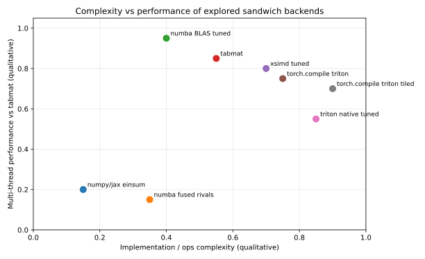

Complexity vs performance (overview)
Qualitative map of the backends explored in this experiment. Axes are intentionally not quantitative — see latest benchmarks for measured speedups.

| Region | Examples | Lesson |
|---|---|---|
| Low complexity, low reward | NumPy / JAX einsum | Correct and clear; ~0.2× tabmat MT |
| Medium complexity, high reward | numba_blas_tuned, tabmat |
Best ROI; beat or match tabmat |
| High complexity, mixed reward | Triton-CPU tiled compile | Wins tall/skinny MT; ops-heavy |